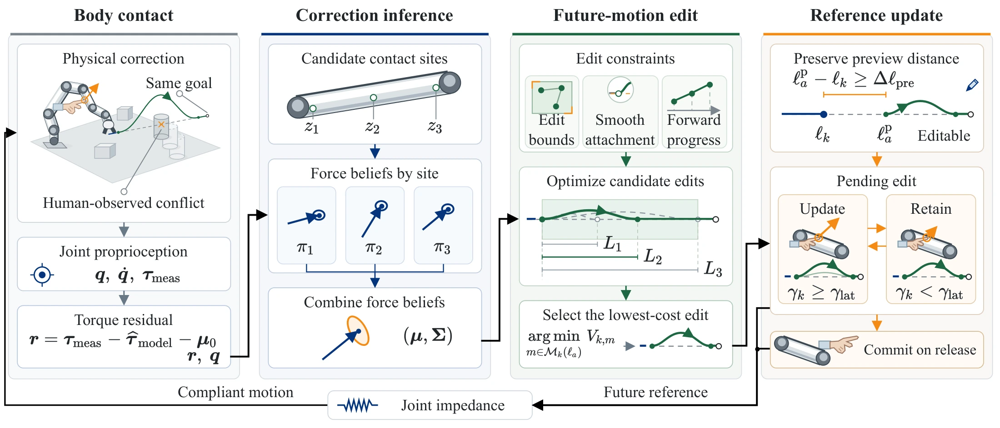
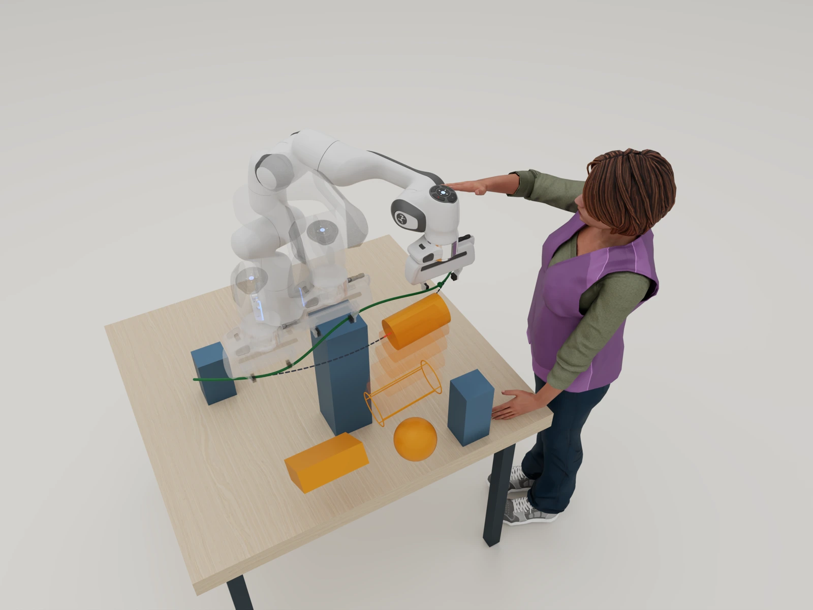
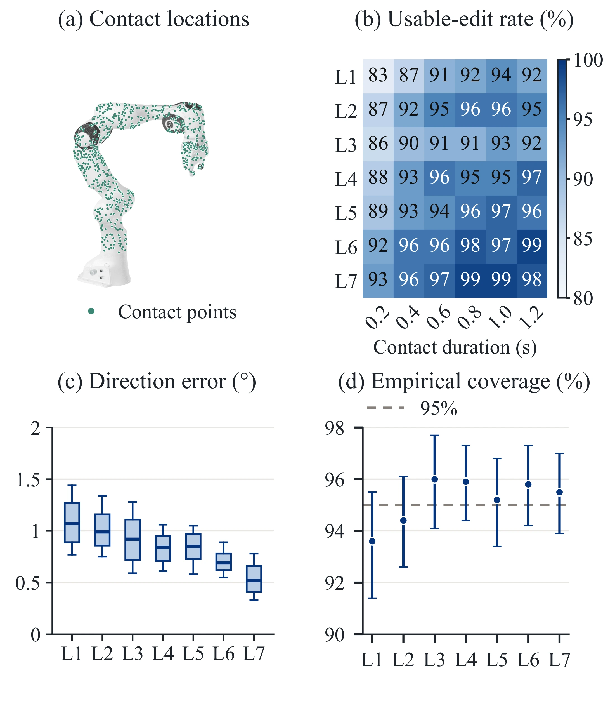
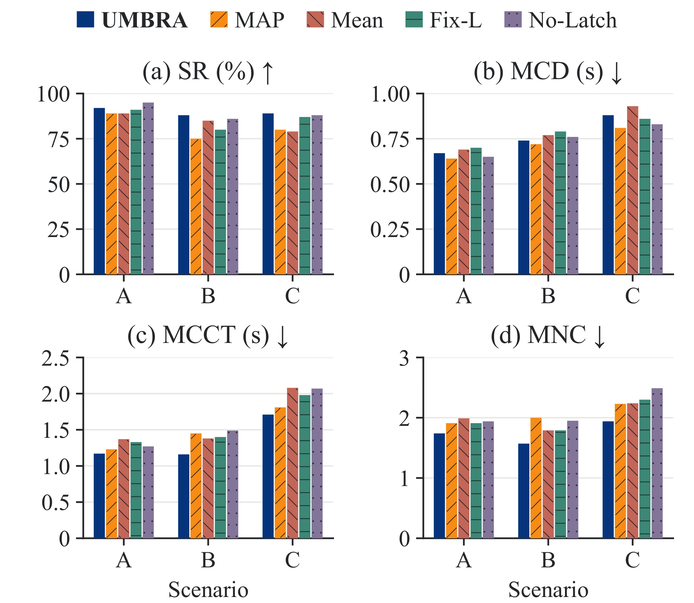
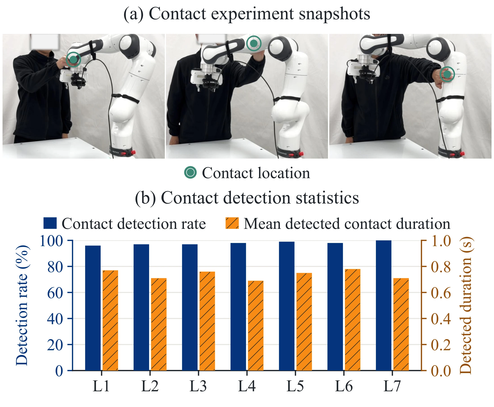

Body-wide contact
A brief push at a reachable point on the arm communicates how the robot's motion should change.
PHYSICAL HUMAN–ROBOT INTERACTION
Uncertainty-Aware Motion Redirection
from Brief Physical Contact
A brief touch on the robot body can change what happens next. UMBRA turns joint-level proprioception into an uncertainty-aware edit of future motion.
01 / THE IDEA
In human–robot collaboration, changes missed by the robot can make its upcoming motion inappropriate. The collaborator supplies a brief geometric correction at a reachable point on the robot body.
A brief push at a reachable point on the arm communicates how the robot's motion should change.
The robot interprets the touch while accounting for uncertainty about the contact location and intended correction.
It smoothly reshapes the motion ahead, responding more cautiously in directions where the correction is uncertain.
The change is refined during contact and retained after release. Later touches can guide further adjustments.

02 / CONTROLLED SIMULATION
Simulation controls the cumulative duration of corrective input and provides ground truth for evaluating correction inference.

A relocated obstacle makes the nominal motion inappropriate. A brief robot-body correction redirects the unexecuted path while preserving the task goal.
| Method | 0.5 s | 1 s | 2 s | 3 s | 5 s |
|---|---|---|---|---|---|
| IC | 0.00 | 0.00 | 5.13 | 20.06 | 53.25 |
| PITD | 30.44 | 45.25 | 56.69 | 69.19 | 74.38 |
| SMPC-A | 25.94 | 53.13 | 70.81 | 77.31 | 79.50 |
| CIAMP | 55.75 | 75.06 | 85.63 | 87.13 | 88.19 |
| UMBRA | 72.88 | 89.81 | 93.75 | 95.25 | 95.56 |
Success requires collision-free task completion with cumulative corrective input no greater than the budget. The budget limits physical input, not total task duration. For SMPC-A, input duration is counted while directional feedback is supplied.
IC: impedance control. PITD: physically interactive trajectory deformations. SMPC-A: safe MPC alignment. CIAMP: contact-informed adaptive motion planning.
SCENE EXPLORER
Explore path edits around relocated obstacles in 32 tabletop layouts.

Seven links, six contact durations, and 100 trials per link–duration condition assess force-direction accuracy and uncertainty coverage.
L1 corrections are restricted to the horizontal plane. Usable-edit rate is the fraction of trials producing an edit that satisfies the prescribed directional and minimum-amplitude criteria.
03 / REAL-ROBOT EXPERIMENTS
Human-applied corrections on a Franka Research 3 evaluate contact detection, motion redirection, and the role of individual components.
BASELINE COMPARISON
Four small boxes
Two elongated boxes
Small and elongated boxes
100 trajectories per method and scenario, across 10 obstacle layouts. Contact metrics are computed over successful trajectories.
| Scenario | Method | SR (%) ↑ | MCD (s) ↓ | MCCT (s) ↓ | MNC ↓ |
|---|---|---|---|---|---|
| A | IC | 33 | 2.52 | 10.69 | 4.24 |
| A | PITD | 60 | 1.97 | 4.83 | 2.45 |
| A | SMPC-A | 65 | 1.42 | 7.62 | 5.37 |
| A | CIAMP | 73 | 1.06 | 2.32 | 2.19 |
| A | UMBRA | 92 | 0.67 | 1.17 | 1.74 |
| B | IC | 29 | 2.43 | 11.81 | 4.86 |
| B | PITD | 56 | 2.06 | 5.33 | 2.59 |
| B | SMPC-A | 72 | 1.21 | 6.32 | 5.22 |
| B | CIAMP | 75 | 1.20 | 2.93 | 2.44 |
| B | UMBRA | 88 | 0.74 | 1.16 | 1.57 |
| C | IC | 31 | 3.01 | 12.82 | 4.26 |
| C | PITD | 51 | 2.45 | 6.68 | 2.73 |
| C | SMPC-A | 59 | 1.49 | 9.70 | 6.51 |
| C | CIAMP | 68 | 1.33 | 3.76 | 2.82 |
| C | UMBRA | 89 | 0.88 | 1.71 | 1.94 |
SR: success rate across all trials. MCD: pooled mean duration per contact event. MCCT: mean cumulative contact time per successful trajectory. MNC: mean number of contacts per successful trajectory.
COMPONENT ABLATIONS
The ablations use the same scenario configurations and share the UMBRA reference trials with the baseline benchmark.


Contacts are applied at random times while the robot follows random trajectories. UMBRA detects 97.9% of 700 contact events, with link-wise rates of 96–100%.
Mean detected contact duration is 0.69–0.78 s. This is the onset-to-offset interval, not detection latency.
Detection rate measures contact recognition. Unlike the simulated usable-edit metric, it does not test the direction of the resulting motion edit, because freely applied human corrections lack an external directional ground truth.
04 / COLLABORATIVE DISASSEMBLY
Two tasks demonstrate how a brief correction accommodates a local change while preserving the robot's objective.
A change in screwdriver pose creates a potential collision. A brief tap redirects the subsequent motion while preserving the delivery objective.
During part transport, a brief push creates additional working space for disassembly while preserving the robot's destination.